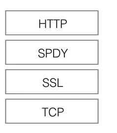
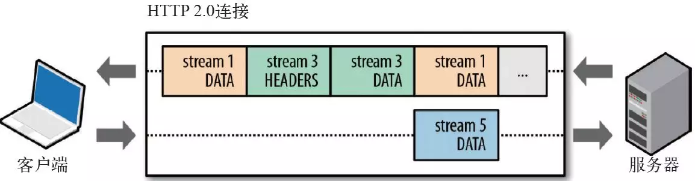

知者不言，言者不知。——老子
Http 系列(-) Http 发展历史
Http 系列(二) Http2 中的多路复用
Http 系列(三) Http/Tcp 三次握手和四次挥手
Http 系列(四) Http 中 Get/Post 的区别
简介
Hyper Text Transfer Protocol（超文本传输协议）,是用于从万维网（WWW:World Wide Web ）服务器传输超文本到本地浏览器的传送协议。是互联网上应用最为广泛的一种网络协议。所有的 WWW 文件都必须遵守这个标准。
超文本传输 协议（HTTP）是用于传输诸如 HTML 的超媒体文档的应用层协议。它被设计用于 Web 浏览器和 Web 服务器之间的通信，但它也可以用于其他目的。
HTTP 是一个基于 TCP/IP 通信协议来传递数据（HTML 文件, 图片文件, 查询结果等）。也要通过三次握手，四次挥手。
HTTP 是一个属于应用层的面向对象的协议，由于其简捷、快速的方式，适用于分布式超媒体信息系统。它于 1990 年提出，经过几年的使用与发展，得到不断地完善和扩展。
HTTP 协议工作于客户端-服务端架构为上。浏览器作为 HTTP 客户端通过 URL 向 HTTP 服务端即 WEB 服务器发送所有请求。Web 服务器根据接收到的请求后，向客户端发送响应信息。
HTTP 协议版本
大致版本可以分为以下四个：
- HTTP/0.9
- HTTP/1.0
- HTTP/1.1
- HTTP/2
发展的历史如下：
HTTP/0.9
HTTP 是基于 TCP/IP 协议的应用层协议。它不涉及数据包（packet）传输，主要规定了客户端和服务器之间的通信格式，默认使用 80 端口。
最早版本是 1991 年发布的 0.9 版。该版本极其简单，只有一个命令 GET。
GET /index.html
上面命令表示，TCP 连接（connection）建立后，客户端向服务器请求（request）网页 index.html。协议规定，服务器只能回应 HTML 格式的字符串，不能回应别的格式。
1 | <html> |
服务器发送完毕，就关闭 TCP 连接。
HTTP/1.0
1996 年 5 月，HTTP/1.0 版本发布，内容大大增加。
相对于 HTTP/0.9 大致增加了如下几点：
- 首先，任何格式的内容都可以发送。这使得互联网不仅可以传输文字，还能传输图像、视频、二进制文件。这为互联网的大发展奠定了基础。
- 其次，除了 GET 命令，还引入了 POST 命令和 HEAD 命令，丰富了浏览器与服务器的互动手段。
- 再次，HTTP 请求和回应的格式也变了。除了数据部分，每次通信都必须包括头信息（HTTP header），用来描述一些元数据。
- 其他的新增功能还包括状态码（status code）、多字符集支持、多部分发送（multi-part type）、权限（authorization）、缓存（cache）、内容编码（content encoding）等。
当时其实也存在一些别的问题如下：
- HTTP/1.0 版的主要缺点是，每个 TCP 连接只能发送一个请求。发送数据完毕，连接就关闭，如果还要请求其他资源，就必须再新建一个连接。
- TCP 连接的新建成本很高，因为需要客户端和服务器三次握手，并且开始时发送速率较慢（slow start）。
HTTP/1.1
1997 年 1 月，HTTP/1.1 版本发布，只比 1.0 版本晚了半年。它进一步完善了 HTTP 协议，一直用到了 20 年后的今天，直到现在还是最流行的版本。
相对于 HTTP/1.0 版本 HTTP/1.1 做了一些优化大致如下：
长连接： HTTP 1.1 支持长连接（PersistentConnection）和请求的流水线（Pipelining）处理，在一个 TCP 连接上可以传送多个 HTTP 请求和响应，减少了建立和关闭连接的消耗和延迟，在 HTTP1.1 中默认开启 Connection： keep-alive，一定程度上弥补了 HTTP1.0 每次请求都要创建连接的缺点。
缓存处理：在 HTTP1.0 中主要使用 header 里的If-Modified-Since,Expires来做为缓存判断的标准，HTTP1.1 则引入了更多的缓存控制策略例如Entity tag，If-Unmodified-Since, If-Match, If-None-Match等更多可供选择的缓存头来控制缓存策略。
带宽优化及网络连接的使用，HTTP1.0 中，存在一些浪费带宽的现象，例如客户端只是需要某个对象的一部分，而服务器却将整个对象送过来了，并且不支持断点续传功能，HTTP1.1 则在请求头引入了range 头域，它允许只请求资源的某个部分，即返回码是206（Partial Content），这样就方便了开发者自由的选择以便于充分利用带宽和连接。
错误通知的管理，在 HTTP1.1 中新增了24 个错误状态响应码，如 409（Conflict）表示请求的资源与资源的当前状态发生冲突；410（Gone）表示服务器上的某个资源被永久性的删除。
Host 头处理，在 HTTP1.0 中认为每台服务器都绑定一个唯一的 IP 地址，因此，请求消息中的 URL 并没有传递主机名（hostname）。但随着虚拟主机技术的发展，在一台物理服务器上可以存在多个虚拟主机（Multi-homed Web Servers），并且它们共享一个 IP 地址。HTTP1.1 的请求消息和响应消息都应支持 Host 头域，且请求消息中如果没有 Host 头域会报告一个错误（400 Bad Request）。
但是同时也存在一些问题如下：
- 虽然 1.1 版允许复用 TCP 连接，但是同一个 TCP 连接里面，所有的数据通信是按次序进行的。服务器只有处理完一个回应，才会进行下一个回应。要是前面的回应特别慢，后面就会有许多请求排队等着。这称为”队头堵塞”（Head-of-line blocking）。
- HTTP1.x 在传输数据时，所有传输的内容都是明文，客户端和服务器端都无法验证对方的身份，这在一定程度上无法保证数据的安全性。
- HTTP1.x 在使用时，header 里携带的内容过大，在一定程度上增加了传输的成本，并且每次请求 header 基本不怎么变化，尤其在移动端增加用户流量。
- 虽然 HTTP1.x 支持了 keep-alive，来弥补多次创建连接产生的延迟，但是 keep-alive 使用多了同样会给服务端带来大量的性能压力，并且对于单个文件被不断请求的服务(例如图片存放网站)，keep-alive 可能会极大的影响性能，因为它在文件被请求之后还保持了不必要的连接很长时间。
SPDY 协议
2009 年，谷歌公开了自行研发的 SPDY 协议，主要解决 HTTP/1.1 效率不高的问题。
这个协议在 Chrome 浏览器上证明可行以后，就被当作 HTTP/2 的基础，主要特性都在 HTTP/2 之中得到继承。SPDY 可以说是综合了 HTTPS 和 HTTP 两者有点于一体的传输协议，主要解决：
- 降低延迟，针对 HTTP 高延迟的问题，SPDY 优雅的采取了多路复用（multiplexing）。多路复用通过多个请求 stream 共享一个 tcp 连接的方式，解决了 HOL blocking 的问题，降低了延迟同时提高了带宽的利用率。
- 请求优先级（request prioritization）。多路复用带来一个新的问题是，在连接共享的基础之上有可能会导致关键请求被阻塞。SPDY 允许给每个 request 设置优先级，这样重要的请求就会优先得到响应。比如浏览器加载首页，首页的 html 内容应该优先展示，之后才是各种静态资源文件，脚本文件等加载，这样可以保证用户能第一时间看到网页内容。
- header 压缩。前面提到 HTTP1.x 的 header 很多时候都是重复多余的。选择合适的压缩算法可以减小包的大小和数量。
- 基于 HTTPS 的加密协议传输，大大提高了传输数据的可靠性。
- 服务端推送（server push），采用了 SPDY 的网页，例如我的网页有一个 sytle.css 的请求，在客户端收到 sytle.css 数据的同时，服务端会将 sytle.js 的文件推送给客户端，当客户端再次尝试获取 sytle.js 时就可以直接从缓存中获取到，不用再发请求了。
SPDY 构成图：

HTTP/2
HTTP/2 可以说是 SPDY 的升级版（其实原本也是基于 SPDY 设计的），但是HTTP2.0 跟 SPDY 仍有不同的地方，主要是以下两点：
HTTP2.0支持明文HTTP传输，而SPDY强制使用HTTPSHTTP2.0消息头的压缩算法采用HPACK，而非SPDY采用的DEFLATE
HTTP/2 的新特性:
- 二进制分帧：
HTTP/2的所有帧都采用二进制编码 - 多路复用 (
Multiplexing) - 请求优先级
header压缩- 服务端推送
二进制分帧：HTTP/2 的所有帧都采用二进制编码
先理解几个概念：
- 帧：客户端与服务器通过交换帧来通信，帧是基于这个新协议通信的最小单位。
- 消息：是指逻辑上的 HTTP 消息，比如请求、响应等，由一或多个帧组成。
- 流：流是连接中的一个虚拟信道，可以承载双向的消息；每个流都有一个唯一的整数标识符（1、2…N）；
HTTP/2 采用二进制格式传输数据，而非 HTTP 1.x 的文本格式，二进制协议解析起来更高效。 HTTP / 1 的请求和响应报文，都是由起始行，首部和实体正文（可选）组成，各部分之间以文本换行符分隔。HTTP/2 将请求和响应数据分割为更小的帧，并且它们采用二进制编码。

帧、流、消息的关系
每个数据流都以消息的形式发送，而消息又由一个或多个帧组成。
帧是流中的数据单位。一个数据报的 header 帧可以分成多个 header 帧，data 帧可以分成多个 data 帧。
多路复用 (Multiplexing)
多路复用允许同时通过单一的 HTTP/2 连接发起多重的请求-响应消息。即连接共享，即每一个 request 都是是用作连接共享机制的。一个 request 对应一个 id，这样一个连接上可以有多个 request，每个连接的 request 可以随机的混杂在一起，接收方可以根据 request 的 id 将 request 再归属到各自不同的服务端请求里面。多路复用原理图：
请求优先级
- 把 HTTP 消息分解为很多独立的帧之后，就可以通过优化这些帧的交错和传输顺序，每个流都可以带有一个 31 比特的优先值：0 表示最高优先级；2 的 31 次方-1 表示最低优先级。
- 服务器可以根据流的优先级，控制资源分配（CPU、内存、带宽），而在响应数据准备好之后，优先将最高优先级的帧发送给客户端。
- HTTP 2.0 一举解决了所有这些低效的问题：浏览器可以在发现资源时立即分派请求，指定每个流的优先级，让服务器决定最优的响应次序。这样请求就不必排队了，既节省了时间，也最大限度地利用了每个连接。
header 压缩
HTTP1.x 的 header 带有大量信息，而且每次都要重复发送，HTTP/2 使用 encoder 来减少需要传输的 header 大小，通讯双方各自cache 一份 header fields 表，既避免了重复 header 的传输，又减小了需要传输的大小。
为了减少这块的资源消耗并提升性能， HTTP/2 对这些首部采取了压缩策略：
- HTTP/2 在客户端和服务器端使用“首部表”来跟踪和存储之前发送的键－值对，不再重复发送 header
- 首部表在 HTTP/2 的连接存续期内始终存在，由客户端和服务器共同渐进地更新;
- 每个新的首部键－值对要么被追加到当前表的末尾，要么替换表中之前的值
两次请求不相同的 header，传说的 header 如下图所示：
服务端推送
Server Push 即服务端能通过 push 的方式将客户端需要的内容预先推送过去，也叫“cache push”。
服务器可以对一个客户端请求发送多个响应。服务器向客户端推送资源无需客户端明确地请求，服务端可以提前给客户端推送必要的资源，这样可以减少请求延迟时间，例如服务端可以主动把 JS 和 CSS 文件推送给客户端，而不是等到 HTML 解析到资源时发送请求，大致过程如下图所示：
注意：
所有推送的资源都遵守同源策略。
服务器必须遵循请求- 响应的循环，只能借着对请求的响应推送资源。
总结
从 http/0.9 到 http/2 的发展，有了很多的优化点如下：
- 二进制分帧：HTTP/2 的所有帧都采用二进制编码
- 多路复用 (Multiplexing)
- 请求优先级
- header 压缩
- 服务端推送
HTTP/2 将请求和响应数据分割为更小的帧，并且它们采用二进制编码，HTTP/2 的通过支持请求与响应的多路复用来减少延迟，通过压缩 HTTP 首部字段将协议开销降至最低，同时增加对请求优先级和服务器端推送的支持。
在上面也分别描述的大致优化的细节，后面会有一个专门来讲从多个 Tcp 请求到多路复用的发展。